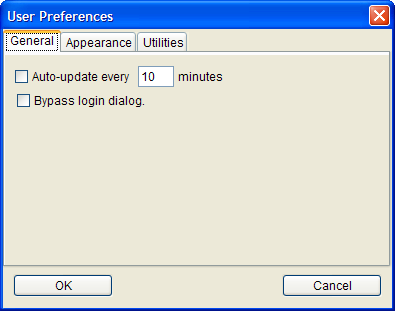
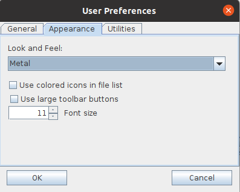
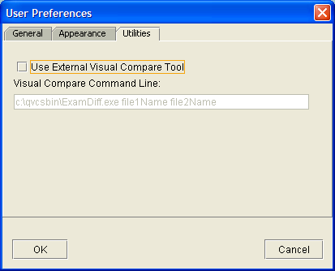

|
User Preferences DialogFrom the Admin/User Preferences... menu, you can display the User Preferences dialog: General Tab From the 'General' tab, you can enable auto-updates on the client, and define the number of minutes to wait between these automatic updates. An automatic update performs the same action as typing the F5 key to refresh the display. In QVCS-Enterprise, a display refresh is a relatively 'cheap' operation. If you enable automatic updates, the update will occur at the frequency that you define. The minimum update frequency is once per minute. You can also disable the automatic login option. Typically, you enable automatic logins directly from the login dialog. Appearance Tab From the 'Appearance' tab, you can select the 'look and feel' that the application will use. Just select the desired 'look and feel' from the 'Look and Feel' drop down combo box, and click OK. The change will take effect when you next start the client application. You can also enable the use of colored icons in the file list display. You can also choose to use large toolbar buttons instead of the standard small toolbar buttons. You can also set the font size that will be used. By default, the font size is 11. Utilities Tab From the 'Utilities' tab, you can define the command line that the client application will use to launch a separate visual compare application. If you enable the 'Use External Visual Compare Tool' check box, then the tool defined by the command line you define here will be used instead of the internal visual compare tool. If you use the IDE integration feature, you'll need to define this command line if you want to perform visual compares from within your IDE. The command line should look like:
The command name is required, and should be the fully qualified filename of the visual compare program. In the screenshot above, the command name is: file1Name and file2Name are required and should appear in the command line in an appropriate spot, as required by the visual compare tool. At runtime, these placeholders are replaced with the names of the files that are actually to be compared. The display1 and display2 parameters are purely optional. If you use these parameters, QVCS-Enterprise will substitute useful strings that help identify the contents of the compare panes. For example, when comparing two revisions within an archive, these values would be the revision number of the respective panes. When the comparison is between the current workfile and the tip revision of the archive, then one value will be the full name of the workfile, and the other will be the revision number of the tip revision in the archive. Most visual compare tools probably cannot make use of the parameters, but they are included for completeness because the QVCS-Enterprise visual compare tool does make use of this information. If the visual compare tool you use needs additional command line flags, you should enter them in the command line that you define, making sure to put the flags in the appropropriate location in the command line. The screenshot shows an example of the command line used for Examdiff. |
| © Copyright 2004-2010 Quma Software, Inc. All Rights Reserved. |